Ask Questions About Document Files
By registering document files to an index, you can ask AI about information listed in the registered documents.
Look here for how to register files to indexes.
Asking About Information in Document Files
Select "Chat" from the app menu at the top left of the screen.
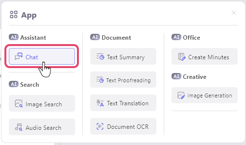Right-click the indexed document file you want to question and select "AI chat from this text (RAG)".
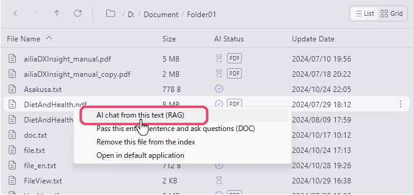Verify that the specified file or folder is displayed at the top.
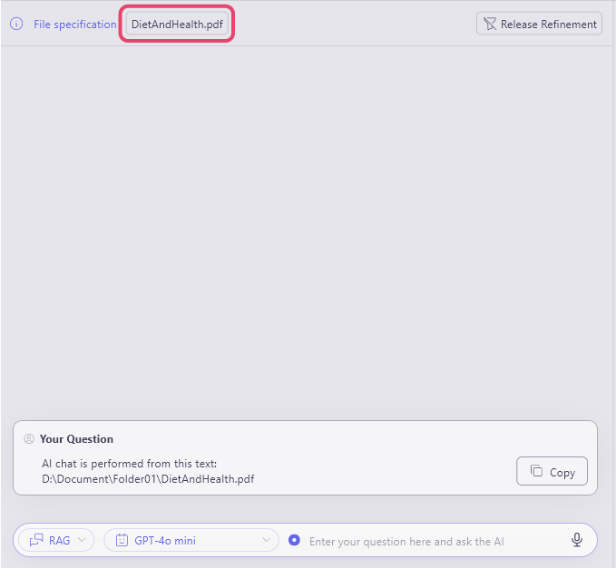The display to the left of the chat box will show "RAG", entered your question, and send it.
The AI will respond based on related files. (The search is conducted by the local AI)
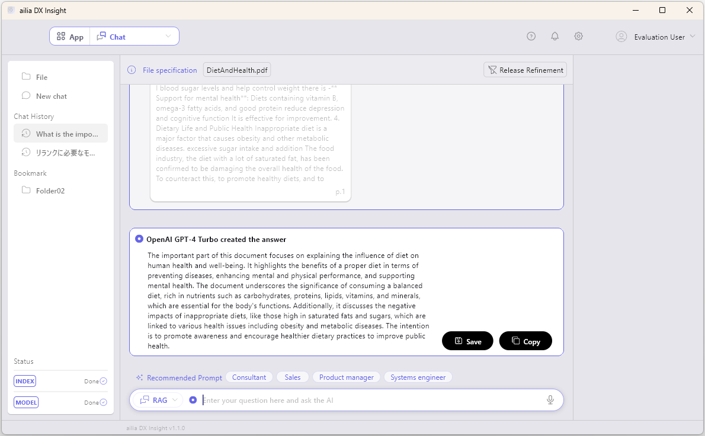
- Scroll up the generated response to see the text referenced by the AI.
Click the referenced text to confirm the reference location.
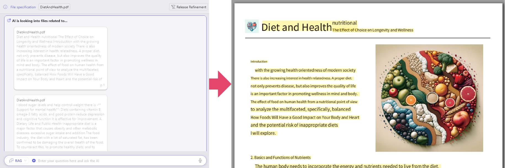
- To return to normal chat, click "Release Refinement".
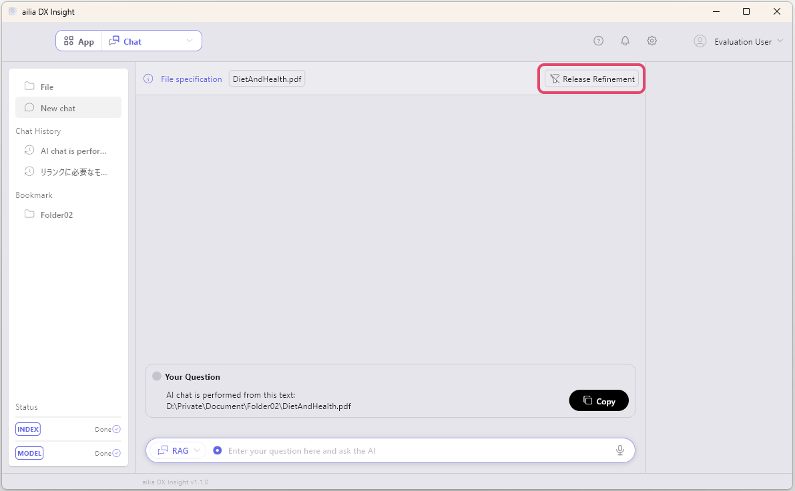
Passing the Entire Document for Questions
In ailia DX Insight, we enhance response performance by using RAG. For more information about RAG, please check here.
However, there are cases where you may want to extract all elements of the text depending on the requirements.
In that case, right-click on the document file and select "Pass this entire sentence and ask questions (DOC)."
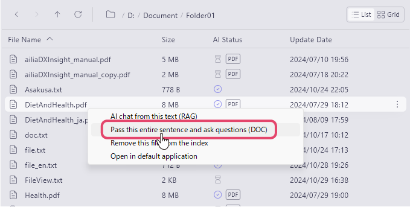
In the case of DOC, information retrieval using RAG will not be performed, and the entire document will be sent to ChatGPT. While it incurs costs, it allows for greater accuracy. Please note that if the chat continues, there will be token costs for the entire document each time.
Asking About Multiple Document Files
You can ask questions across multiple document files by putting related documents in a folder.
Ensure to have the app menu at the top left set to chat mode.
- Right-click the folder containing the registered files, and select "AI chat from this folder".
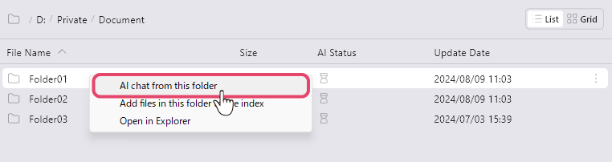 - Verify the specified folder is displayed at the top.
The files contained within the folder will be listed at the bottom.
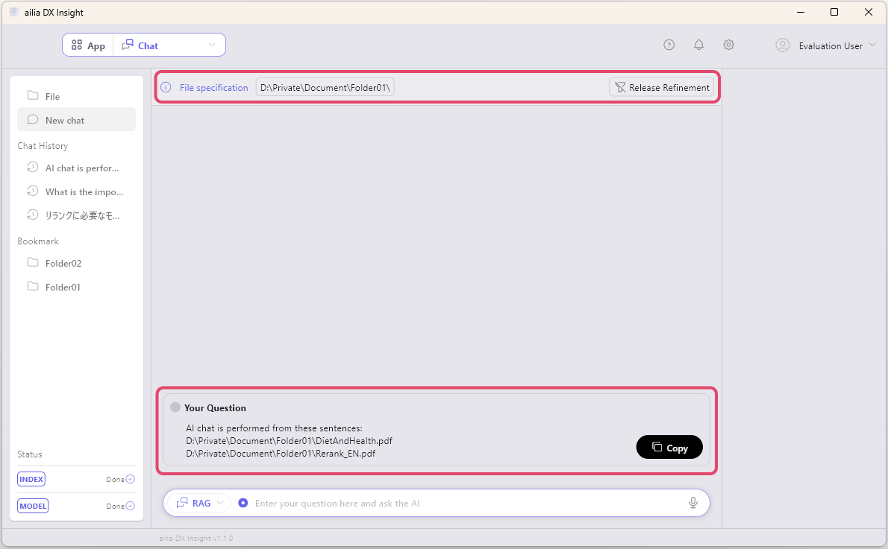 - The display to the left of the chat box will show "RAG", enter your question, and send it.
The AI will check the related files and display the response. (The search is conducted by the local AI)
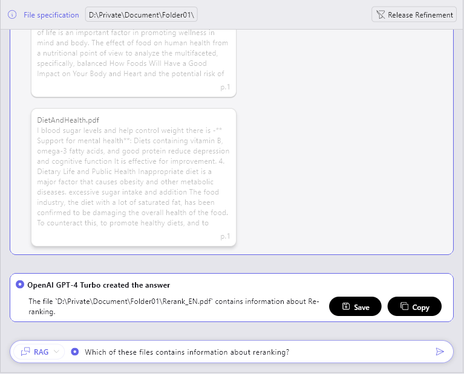
Scroll up the generated response to confirm the files and text referenced by the AI.
Click the referenced text to verify the reference location.
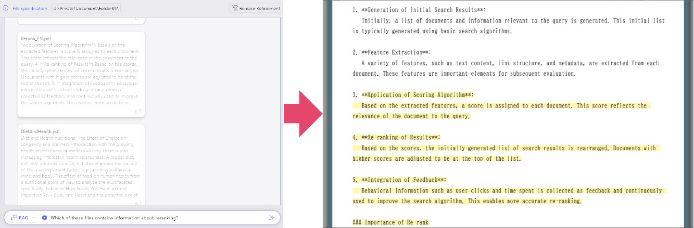
- To return to normal chat, click "Release Refinement".
Compare multiple files and ask questions
You can select two or more files and have the AI compare them by asking questions in DOC mode.
You can quickly and easily check for changes in updated contracts or document files.
In chat mode, select two or more files while holding Shift (or Ctrl) and right-click to choose "Give these sentences as a whole and ask (DOC)" from the menu.
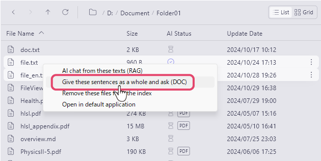Enter your question in the chat box and send it.
At this time, confirm that the display on the left side of the chat box is "DOC".
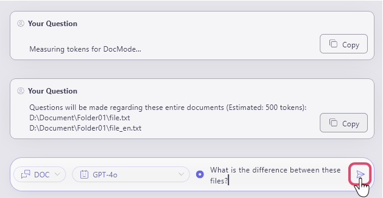The AI will refer to the selected files and generate an answer.
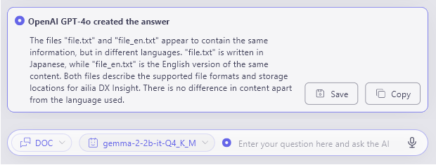
RAG
ailia DX Insight uses Retrieval-Augmented Generation (RAG) to make response rationale clear and suppress the generation of factitious information.
For more details about RAG, please refer here.